Each RenderLayer asks all of its RenderObjects to paint themselves into the GraphicsLayer’s GraphicsContext, which is backed by a bitmap in shared system memory
The compositor keeps track of which GraphicsLayers have changed since the last time they were drawn and only updates the textures as needed
The new, composite bitmap is drawn to screen
Web Develoment in practice
KeyPoints
Extraction and transformation of data into monitorable Key Points. Key Points are visual cues that highlight key data
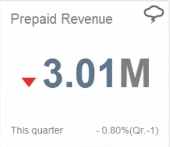
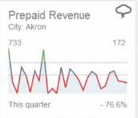
Components
I've been working on three experimental component to showcase the advanced usage of KeyPoints and possible evolution of the project in our vision:
Configuration UI
Highlight Page Global performance indicator
HIghlight Page Manager
The Workflow
A piece of data is selected (one or more bar in a bar chart)
User decide to creating a key point starting from this selection
Different KP are possible, depending on the type of selection
We provide a service - the Advisor - to suggest a list of possible point
Depending on the requested point, additional configuration may be required
Configuration UI
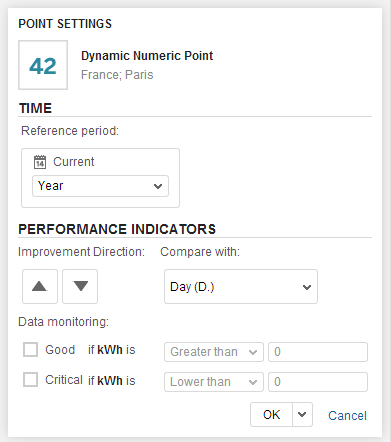
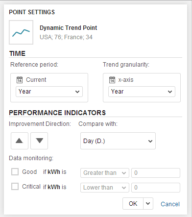
Configuration UI
Built using SAPUI5
Put to stress the time-query system
Enables gamification feature
Highlight Page Global performance indicator
Display the overall state of point of interest
Allows user to specify the "importance" of each keypoint
The global performance value is computed as weighted average
Weather indicator, consistent with Key Points
Highlight Page Global performance indicator
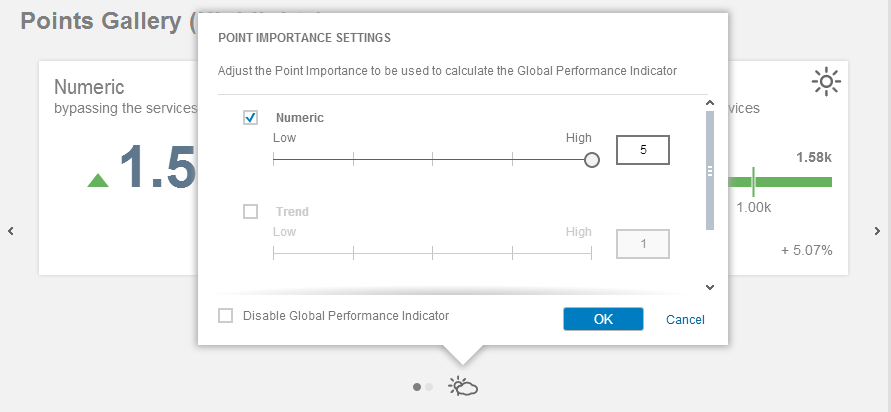
Highlight Page Manager
Motivation
Some interesting feature for the Highlight Page were not planned for v1.0 because of time constraint. Two of these features, namely Filtering and Ordering, has been implemented as "experimental"
Highlight Page Manager
Objective
Filtering based on measures, dimensions and points status
Drag & Drop-based keypoints reordering
Keep global performance indicator and point weights consistent
Highlight Page Manager
Overview
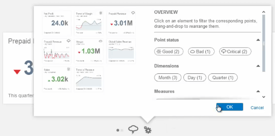
Highlight Page Manager
Filtering
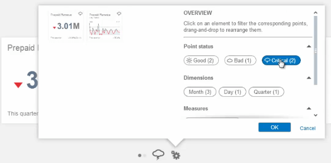
Highlight Page Manager
Reordering
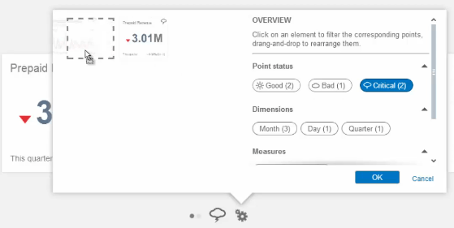
Story telling
AKA: Infographics
Add to Lumira Desktop capabilities for the creation of infographics, exploiting the availability of real data, charts and infocharts
Infographics
Key Aspects
Responsiveness
Authoring
Customization
Image Export
Responsive Grid
Infographics are responsive website built on top of Twitter Bootstrap grid system
Based on CSS3 Media Query
Elements are placed within rows and can take from 1 up to 12 columns
As the display size shrink, elements are stacked vertically, to keep them usable
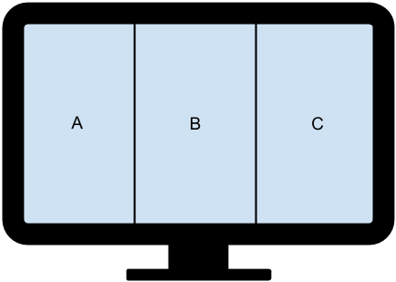
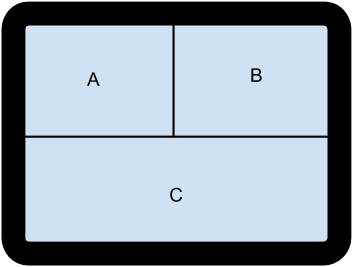
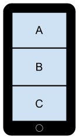
The interaction model

Narrate a story: page based model
Each page is as big as the screen
Scroll/touch gestures trigger transition between pages
Problem: what if a page is bigger than the screen?
Problems with touch events
When to perform the animated transition?
Do we allow elements to overflow horizontally?
Scroll event handlers must be FAST, otherwhise, scrolling becomes laggy
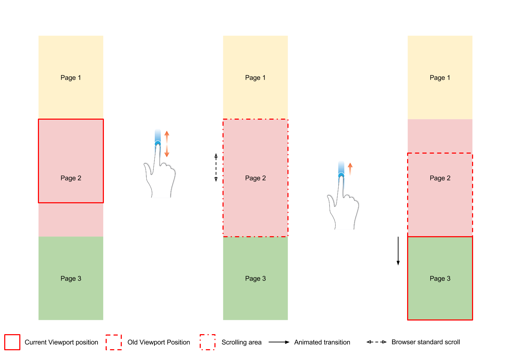
Image export
Since the basic output is HTML, we cannot directly export it as an image. To support PNG export we:
Generate a (fixed-size) SVG, starting from the same model
For each image present:
create a <canvas>
Draw the image into the canvas
replace the original image with its base64 PNG encoded version
(external images would block next steps)
Create another canvas, as big as the final image
draw the generated SVG inside the canvas
Make the base64 PNG available to download as a link
Performances Evaluation
Key Points
Since everything is build as SAPUI5 component, performances are strictly related to those of the framework. In particular, I've experienced some problem with:
Synchronous dependency management
Recursive component redraw
The 'thicks' in the slider made the component esponentially slow
Story Telling
Tools, not rules.
Optimal Target
For non-animated interaction: 100ms
For animation and transition: <16ms (60 fps)
30fps is OK, given that they're constant
First implementation: 20 fps :(
By using chrome dev tools I discovered that:
Every time a touch event was fired it was
followed by a long chain of other event handler, taking up almost all the 16 ms time budget.
By removing these handlers: 30 fps With a standard deviation of 70ms :|
Exploiting hardware acceleration:
I've used translate3D instead of translate to perform page transition. These way, the Render Layer is promoted to have its own Graphic Context, and 3D transformation are performed by the GPU